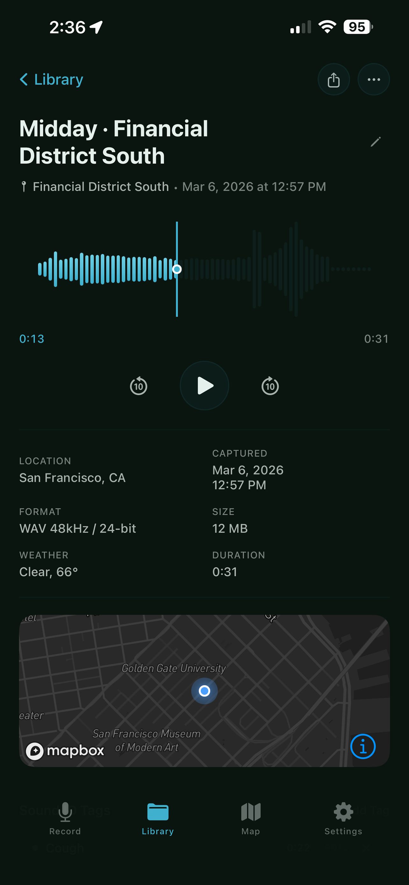

A field recording tool for sound artists, nature recordists, journalists, and curious ears.

Features
Record in WAV, AIFF, FLAC, or AAC at up to 96 kHz / 32-bit. CD, Broadcast, and Studio quality tiers — you choose the resolution.
Every recording is pinned to a place. Location, place name, region, and time of day are captured automatically and visible on a map.
On-device AI listens as you record and tags sounds in real time — birdsong, wind, rain, traffic, voices. Tags are timestamped and attached to the recording.
On-device speech recognition runs as you record. Your spoken observations are transcribed live and saved alongside the audio — no server, no account required.
Temperature and conditions are snapshotted at the moment of recording. Dawn, midday, golden hour, dusk, or night — the time of day is noted too.
Six themes — Dark, Light, Dawn, Golden Hour, Night, Outdoors. Each is tuned for the light and mood you're recording in.
Privacy
Sound identification and speech transcription run entirely on your device using Apple's on-device frameworks. Field. never sends your audio, location, or transcripts to any server. Your recordings are yours.
Support
Bug reports, feature requests, and ways to make this even better.
Open an issue on GitHub